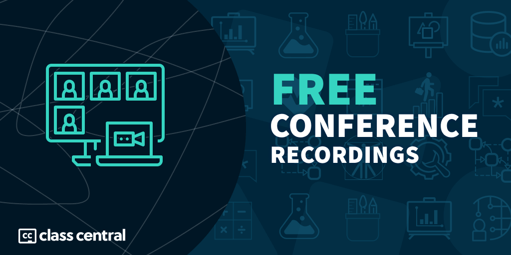

500+ Hours of Free Conference Recordings on Online Learning
You can watch many online education conferences online. Here are over 500 hours of conference recordings.

During the pandemic, many online education conferences that usually take place in-person moved to an online format, lowered participation fees, and made accessible through online recordings. Also due to the pandemic, interested in online education exploded, making those conferences more relevant than ever.
Fortunately, some of these conferences have decided to retain an open format, or at least, continue to supplement their in-person experience with video recordings accessible online. So we scoured the web in search of these recordings, and compiled more than 500 hours of video recordings of conferences about online education.
These cover a wide variety of subjects, including affordable online degrees, the future of higher education, flipped classrooms and blended learning, online learning communities, OER instructional design, and a lot more.
Class Central contributed to a number of events, including Learning with MOOCs 2022, where Dhawal gave a keynote analysing the impact of the pandemic on online course platforms (slides here), and Suparn presented a paper dissecting Udemy’s course catalog (paper here).
Below, you can find the latest recordings available for a flurry of online conferences on online learning, as well as recordings of previous editions. We hope you find something that interests you. Please let us know in the comments if we missed a relevant conference.
Online Learning Conference Recordings
Learning @ Scale 2022
ACM & Cornell Tech | New York, USA | June 1–3, 2022
The ACM conference Learning @ Scale “investigates large-scale, technology-mediated learning environments that typically have many active learners and few experts on hand to guide their progress or respond to individual needs.”
- Welcome address from Greg Morrisett, Dean of Cornell Tech
- Meet Me in the Middle: Retention in a MOOC-Based Degree Program
- Using NLP to Quantify Program Decomposition in CS1
- Panel Discussion: The Future of Assessments
- Millions and Billions of Views: Understanding Popular Science and Knowledge Communication
Program | Proceedings | Playlist (15 hours)
Coursera Virtual Conference 2022
Coursera | Online | May 4–5, 2022
Coursera invites its academic and industry partners annually to discuss current trends and challenges in the online education world. Moreover, the Coursera leadership team presents Coursera’s vision for the year.
You may watch all the sessions for free, but you’ll have to register here first.
- Creating More Equal Opportunity in a More Digital World
- Coursera Product Innovations
- Panel Discussion: The “New” Future of Work
- Creating a culture of learning to drive competitive advantage
- Panel Discussion: Innovative Pathways to Degrees
Video Recordings (28 hours)
ASU+GSV Summit 2022
ASU & GSV | San Diego | April 4–6, 2022
- (Re)Designing Edtech to Unlock Powerful Learning
- Personalizing the Learning Journey
- Why Education is Vital to Tackling the Climate Crisis
- The Future of Cohort-Based Consumer Courses
- Hollywood Becoming Harvard: Empowering Celebrities as Teachers
Playlist (138 hours)
Enhancement Conference 2022
QAA Scotland | June 8–9, 2022

“Resilient Learning Communities is the 2020-23 sector-wide Enhancement Theme. This Theme will focus on meeting the changing needs and values of an increasingly diverse student community and a rapidly changing external environment.“
- Welcome Address
- Keynote: Equity and inclusion – moving from aspiration to reality
- Evaluation Made Much Easier?
- Keynote: Successful Flexible, Accessible Pathways: Making this Work
- Work experience deserves credit: RPL processes in practice
Program | Playlist 1 (6 hours) & Playlist 2 (5 hours)
EMOOCs & Learning @ Scale 2021
HPI | Potsdam | June 22–24, 2021
“The boost in digital education worldwide as a result of the pandemic was also one of the main topics of this year’s EMOOCs. All institutions of learning have been forced to transform and redesign their educational methods, moving from traditional models to hybrid or completely online models at scale.”
In 2021, EMOOCs was held jointly with Learning @ Scale.
- Opening remarks from HPI Director Christoph Meinel
- Keynote: The role of institutions in defining the new normal by Jeff Maggioncalda, Coursera CEO
- Panel Discussion: The Big Fish in the Same Tank: FutureLearn, Coursera, edX
- Round Table: Perspectives of Global and Regional MOOC Providers
- Perspectives from Oceania
Program | Proceedings | Video Recordings (20+ hours)
ASU+GSV Summit 2021
ASU & GSV | Online | August 9–11, 2021
- Stage X Conversation on the Future of Online Education
- Longer Higher Ed: The Next Generation of Life Learning
- The Rise of Community and Cohort Based Learning
- How Project-based Learning Wakes up the Brain
- India: Serving the Underserved Next Half Billion
Program | Playlist (152 hours)
Learning with MOOCS 2020
IEEE & Universidad Galileo | Online | September 30 – October 2, 2020

“This IEEE conference provides academic and industry professionals the opportunity to discuss research into MOOC technologies as well as the practical aspects of creating and offering MOOCs to diverse worldwide audiences.”
- IEEE LWMOOCS Conference 2020
- The Second Year of the MOOC by Dhawal Shah (Class Central CEO)
- Keynote: Achieving CSforALL through the Beauty and Joy of Computing (BJC) by Dan Garcia
- The Keys to Making an Engaging Online Course by Barbara Oakley
- Keynote: From MOOCs to Degrees and Back Again: The Georgia Tech OMSCS Program by David Joyner
Program | Proceedings | Playlist (8 hours)
Learning @ Scale 2020
ACM & Georgia Tech | Online | August 12–14, 2020
- Opening remarks from organizers
- Affordable Degrees at Scale: New Phenomenon or New Hype?
- Using Google Search Trends to Estimate Global Patterns in Learning
- Learning to Cheat: Quantifying Changes in Score Advantage of Unproctored
- Studying Retrieval Practice in an Intelligent Tutoring System
Program | Proceedings | Playlist (7h)
Coursera Virtual Conference 2020
Coursera | Online | April 21, 2020
You can also read Class Central’s summary of the whole event.
- Welcome Remarks from Daphne Koller, Coursera Co-Founder
- Coursera Keynote from Jeff Maggioncalda, Coursera CEO
- Coursera for Campus: Supporting Universities During COVID-19
- Coursera’s Product Leadership Presents: Product Innovations
- The New Reality and Impact of COVID-19 on Higher Education Panel
- Closing Remarks from Andrew Ng, Coursera Co-Founder
Playlist (2 hours)
ASU+GSV Summit 2020
ASU & GSV | Online | September 29 – October 1, 2020
- Creating Better Presentations that are Simple and Fun for Education
- Employers as Educators: Teaching Essential Skills of the Future
- University Leaders Forecast the Future of Higher Education A.D.
- Social and Emotional Learning: Pathway to Equity and Excellence in Education
- The Road to India: the Outside-In Perspective
Playlist (103 hours)
Enhancement Conference 2020
QAA Scotland | November 3–5, 2020
“‘Learning from disruption: exploring what counts in higher education’ focused on the evidence and experiences gathered from a period of disruption and asked how this might shape future higher education design, delivery and the wider student experience. Delegates from across the world came together to exchange views, identify shared values and explore how higher education is changing, both as a result of the current COVID-19 pandemic and to meet future challenges.”
- Professor Mary Stuart, CBE: Universities in the 21st Century – purpose in a changing world
- Panel: Learning from disruption: exploring the impact of the rapid move online
- 10 simple rules for supporting a temporary online pivot for higher education
- impact? by Andrea Cameron and Julie Blackwell-Young (Abertay University)
- Professor Sally Kift: Keeping calm in the face of disruptive innovation
Recordings (6 hours)
EADTU Webinar on Joining Online Education
EADTU | April 21, 2020
“The Corona Crisis now forces students and teachers to work from home and organise education offered online. EADTU, as a representative of many leading higher education institutions in online education took the initiative to bundle examples and resource banks of members and related stakeholders to support you to join online teaching.”
MidSchoolMath unConference: 21st Century Math: Engaging Online Students in Multi-sensory Learning
MidSchoolMath | April 23, 2020
“We are opening the door to all math learners through multi-sensory experiences. When we engage students through multi-sensory activities, we are seeing unprecedented results and learning gains. This unconference is dedicated to providing you with tools and resources for facilitating online learners.”
- Keynote Address: Mathematics. Making the Invisible Visible
- Collaborative Problem Solving and Remote Learning with Teachley
- Math Jam – Bring Your Virtual Classroom to Life
- First Ever Algebra-Readiness Platform Created by Hit Songwrites / muzology.com
- ASSISTments @ #MathUnConference for Teachers
- Distance Learning, Remote Teaching,and Collaborative Problem Solving Tool for Math
EADTU-EU Online Summit about “Digital Transformation and Innovation in Education”
EADTU | April 30, 2020
“EADTU-EU ONLINE Summit 2020 covers the following topics: Microcredentials; embracing a new qualification; implementing CMF in (MOOC-Based) Short Learning programmes, The concept and role of online Short Learning Programmes in European Higher Education, Empowering education by artificial intelligence, EMBED; the European Maturity Model for Blended Education; launch of the EMBED MOOC”
Program | Video Recordings (3 hours)
Webinar on Facebook and Higher Education Partnerships
Facebook | May 7, 2020
“The webinar will provide a summary of why Facebook has developed learning offerings for students and educators to use in the classroom that are focused on digital marketing expertise, which is becoming a necessary skill in any field (and not specifically for the marketing profession), as well as providing students with a sharper understanding of entrepreneurship.”
Program | Video Recording (1 hour)
EADTU IHE2020 Conference
EADTU | October 28–30, 2020
“The Innovating Higher Education (I·HE) conference focuses on trends and high impact factors in global and European higher education. This year’s theme is: ‘Higher Education in the new normal: the role of online, blended and distance learning’.”
- Recordings IHE2020 Day 1
- Recordings I·HE2020 Online Bridging Event Day 2
- Recordings I-HE2020 Online Bridging Event Day 3
- Recording IHE2020 Day 3_The European Maturity Model
- Recordings I-HE2020 Online Bridging Event Day 3
EdTechX Summit Online about COVID-19: The Disruptor of Education and Work
EdTechX Europe | May 12–13, 2020
“The online EdTechX Summit aims to have as many leaders as possible participate in this extremely topical and vital conversation. Explore the networking features and our extensive on-demand agenda below – then join us for the most comprehensive, connected EdTech event of 2020.”
Video Recordings (37 hours)
Webinar: Creating and Sharing Open Educational Resources (OER)
National Forum T&L | May 29, 2020
“This webinar explores how to share resources that you have developed as open educational resources (OER) in order to facilitate sharing and reuse by others. Key topics will include choosing an open licence, creating an open licence, and considerations for sharing and reuse. This webinar uses the National Forum Open Licensing Toolkit as a reference guide.”
Video Recording (1 hour)
Rutgers Online Learning Conference 2020
Rutgers Continuing Studies | June 1, 2020
“At the Rutgers Online Learning Conference, the best minds and frontline leaders in online education from across New Jersey and the country gather to focus on online, hybrid, and technology-assisted face-to-face learning. The annual conference is open to the public, attracting those from both private and public institutions each year.”
- Can online learning also be DEEPER learning? by Scott McLeon
- Avoiding the “Course and a Half Syndrome” by Ruth Ronan
- Building Online Teacher Professional Development and Resources in K-12 STEM, STEAM and Maker Education by David Jordan Shernoff, Suparna Sinha
- Opening Learning: How Using OER Challenges Adult Learners’ Conceptions of Learning by Brian Shevory
- Instructional and Curriculum Design that Addresses the Challenges Experienced by First Time Students in a Fully Online Course by Dr. Robin Eubanks
Webinar on Instructional Design And Course Planning for OER
Online Learning Consortium | June 10, 2020
“This webinar will discuss a strategy for course design with OER, and will present two practical and easy to use tools to guide the course planning, course design, and development processes. The evaluation and selection criteria checklist will assist faculty in choosing the most appropriate OER for their courses.”
International Conference On E-Learning In The Workplace (ICELW) 2020
ICELW | June 10–12, 2020
“The conference brings together researchers and practitioners from around the world, welcoming anyone interested in the uses of technology to improve education and workplace learning.”
- ICELW 2020 – Wed., June 10th – AM Session
- ICELW 2020 – Wed., June 10th – PM Session
- ICELW 2020 – Thurs., June 11th – AM Session
- ICELW 2020 – Thurs., June 11th – PM Session
- ICELW 2020 – Fri., June 12th – AM Session
- ICELW 2020 – Fri., June 12th – PM Session
OLC Innovate 2020 Virtual Conference
Online Learning Consortium | June 15–26, 2020
“It is more critical than ever that academic leaders, faculty, and administrators alike come together to ensure that our pedagogies are progressive, organic, and continually break new ground. OLC is committed to creating equitable spaces where academics, practitioners, students, and staff can work together across their unique experiences to build truly inclusive communities, learning environments, and support experiences.”
- OLC Live! The Heart of Engagement
- OLC Live! Interview with Keynoter Martin Weller
- OLC Live! Forging Meaningful Ed Tech Partnerships
- OLC Innovate 2020 Instructions – Classic
- OLC Innovate 2020 Instructions – Beta
Media & Learning Online Conference
Media & Learning Online | June 17–18, 2020
“Media & Learning Online is a two-day online conference organised by the Media & Learning Association with the help and support of the Media & Learning 2020 Advisory Committee.”
- Proctoring and the role of video
- Scaling up video production: recording or live stream professional-quality videos from home and on campus
- How a Reluctant Online Teacher Found Purpose, Connection, & Adventure Teaching Online
Video Recordings (5 hours)
29th EDEN ANNUAL Conference 2020
EDEN | June 21–24, 2020
“The mission of EDEN is to maximise the potential to exchange academic and professional experience, to promote effective navigation in the field, and improve the quality and depth of information available to the sectors concerned.”
- EDEN 2020 VIRTUAL ANNUAL CONFERENCE – DAY 1: Opening ceremony – Plenary
- TECHNOLOGY POWERING THE FUTURE OF MICRO-CREDENTIALS – MicroHE Final Conference
- IMPACTS OF MICRO-CREDENTIALS ON INSTITUTIONAL PROCESSES – MicroHE Final Conference
- Plenary session with GEORGI DIMITROV, EIT EC and JESUS BOTICARIO, UNED
Course Hero Virtual Education Summit 2020
July 29–31, 2020
“The event will include three days of research sharing, presidential panel conversations, campus reopening discussion forums, online teaching demonstrations, learning science workshops, participatory breakout sessions for focused conversations, social events for network building, family programming (to keep the young learners entertained), yoga and wellness hours, musical interludes by emerging student artists, and even a DJ for some virtual movemaking.”
- Leadership vs. leadership by Michael Sorrell
- Teaching During COVID-19: Stress, Burnout, PTSD & Compassion Fatigue
- Student Panel: What Role Do Universities Play in Supporting Their Students?
- The First Week of Class: Building a Virtual Learning Community | Stephanie Speicher
- Creative Assessments for Online Learning | Benjamin Wiggins
- Design Thinking in Education: Empathy, Opportunity, and Ideation
Association for Learning Technology (ALT) Online Summer Summit 2020
ALT | August 26–27, 2020
“The ALT Online Summer Summit 2020 will bring together Learning Technology practitioners, researchers and policy makers to share strategies for the next academic year and the new challenges now facing us. Organised by the leading professional body for Learning Technology in the UK, the Summer Summit will bring together leaders, researchers and practitioners from across sectors.”
- Learning Technology in times of Crisis, Care and Complexity – the Strategic view
- The Role of Learning Technology in Supporting Education Through Crisis
- Assessment and digital competences: building capacity with academic staff
- What we can learn from user experience design to make learning technology more inclusive
- Defining a digital future for teaching, learning and assessment: What do our students want?
European Conference on Technology Enhanced Learning
EATEL | September 14–18, 2020
“This conference is one of the conferences with the longest trajectory in the field of Technology Enhanced Learning. It has become the main conference in Europe in this topic, and it usually attracts the main researchers in the field within Europe, as well as researchers from across the world. In addition, the conference is the meeting point for European Research Projects in the field of Technology Enhanced Learning.”
- Keynote by Samuel Greiff “Technology-Based Assessments in 21st Century Education”
- Keynote by Linda Castañeda: Beyond education as skill collection and technology as a tool
- Keynote by S. Seufert “Current & Emerging Educational Realities – Shaping the Digital Transformation?”
- Keynote by Jens Mönig: The Music Comes Out Of The Piano. Learning With Computers & From Computers
Program | Proceedings | Video Recordings (5 hours)
OEB – Shaping the Future of Learning
OEB.global | Dec 2–4, 2020
“Online Educa Berlin (OEB) is the annual global, cross-sector conference and exhibition on digital learning and training. The event has a unique focus, bringing you to the forefront of developments in learning technology. Since 1995, insights gained at OEB have pointed the way towards the future of learning.”
- OEB 2020 – Opening Plenary with Andreas Schleicher
- Keynote Commissioner Mariya Gabriel
- Plenary with E. Galli & G. Wilmshurst-Smith: The New L&D
- Plenary with David White and Barbara Wasson – Education Futures: Data AND Creativity
- Webinar #1: Scrapping the Syllabus: How to Lead the Shift to Online Classrooms, Fast
- Webinar #2: David White – Presence Machines: Creating a Sense of Connection Online
- Bert De Couture – Two Habitats of Learning
Program | Video Recordings (6 hours)
Tags

Heba Ledwon


{kind=link}
{kind=link}
{kind=link}
{kind=link}
John Mayer
Here is a free mini-course created for law professors held last June of 2020. All the materials and videos are freely available including MP3 audio for download, slides, transcripts and lists of links mentioned.
Preparing for the Future of Legal Education – Online Teaching Tips & Techniques
https://onlineteaching.classcaster.net/